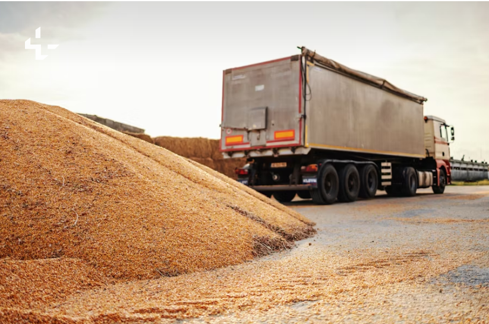

The Challenge: A Broken Supply Chain
Farmers are the backbone of our food system, yet they face significant challenges that hinder their productivity and financial stability. One of the most pressing issues is the inefficiency of the **farm-to-mill supply chain**. Without proper scheduling, farmers spend countless hours—even days—waiting at mills. This idle time is a massive drain on resources, leading to increased fuel costs, wasted labor, and immense personal stress. It's a problem that affects not just the farmer but the entire agricultural ecosystem.
Additionally, many farmers rely on traditional knowledge passed down through generations for crop selection and fertilizer use. While this wisdom is valuable, it often lacks the precision of modern agricultural science. This can lead to imbalanced soil nutrients, resulting in **lower crop yields** and, over time, a decline in soil health.
Our Solution: A Smart Digital Platform
We propose a **Smart Digital Platform** designed to solve these fundamental problems. This innovative system aims to create a seamless connection between farmers and mills, revolutionizing how agricultural goods are transported and managed. By providing real-time, accurate mill schedules, our platform allows farmers to plan their trips with precision, eliminating the need for long, unproductive waiting periods.

Key Benefits for Farmers and Mills
Our primary objective is to make the logistics process more efficient, transparent, and profitable for all parties involved. The platform delivers multiple benefits:
-
Reduced Waiting Time
Farmers can book a specific time slot for delivery, ensuring a quick and efficient drop-off. This eliminates hours of idle time, freeing them to focus on other farm tasks.
-
Cost Savings
By optimizing travel routes and reducing waiting times, our platform helps farmers save on fuel and labor costs, directly increasing their profit margins.
-
Improved Logistics and Planning
Mills can receive a steady, predictable flow of deliveries, allowing them to manage their operations more effectively and avoid periods of both backlog and inactivity.